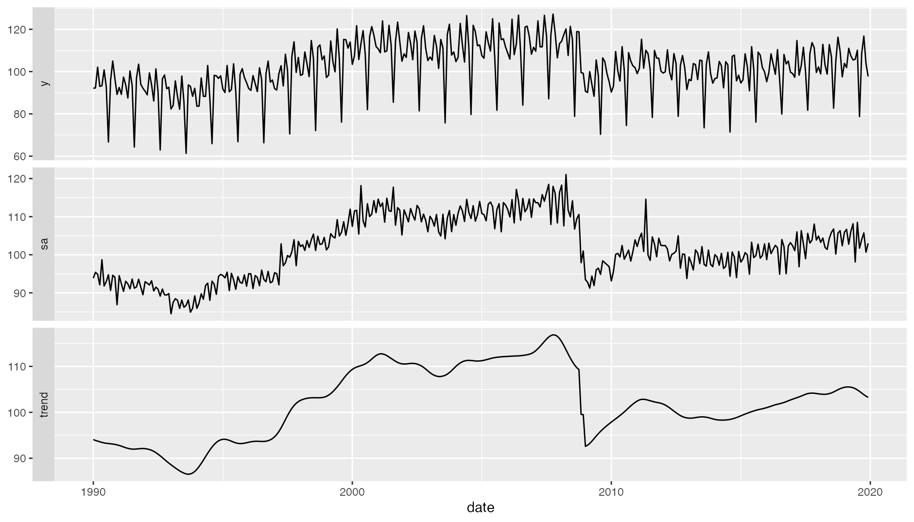
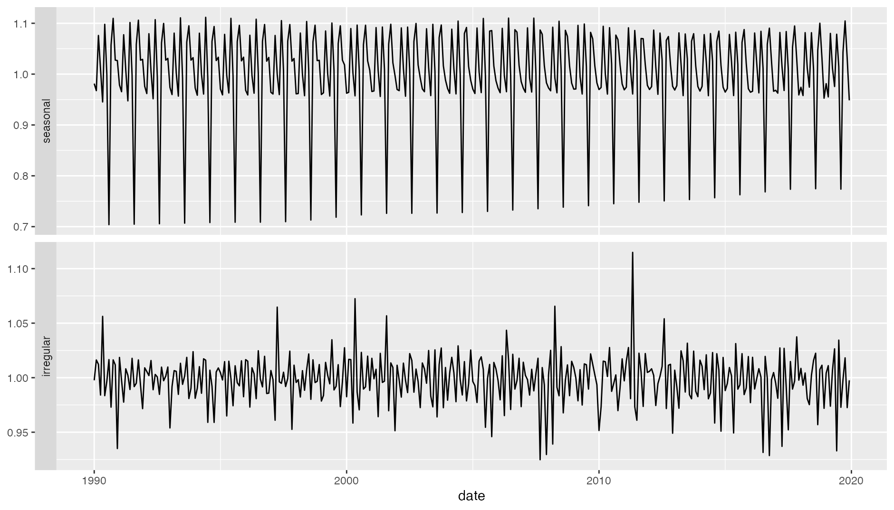

ggdemetra3: extending ggplot2 to perform seasonal adjustment with rjdemetra3
Alain Quartier-la-Tente
2023-09-06
Source:vignettes/ggdemetra3.Rmd
ggdemetra3.Rmdggdemetra3 is an extension of ggplot2 to add seasonal adjustment statistics to your plots. The seasonal adjustment process is done with rjdemetra3 that is an R interface to JDemetra+ 3.0, the seasonal adjustment software officially recommended to the members of the European Statistical System (ESS) and the European System of Central Banks. rjdemetra3 implements the two leading seasonal adjustment methods TRAMO/SEATS+ and X-12ARIMA/X-13ARIMA-SEATS.
There are 4 main functionalities in ggdemetra3 depending of what you want to add in the graphic:
-
geom_sa(): to add a time series compute during the seasonal adjustment (the trend, the seasonal adjusted time series, etc.).
-
geom_outliers(): to add the outliers used in the pre-adjustment process of the seasonal adjustment. -
geom_arima(): to add the ARIMA model used in the pre-adjustment process of the seasonal adjustment. -
geom_diagnostics(): to add a table containing some diagnostics on the seasonal adjustment process.
Note ts objects cannot be directly used in ggplot2. To convert ts or mts object to data.frame, you can use the ts2df() function. For example, the data ipi_c_eu_df used in this package is obtained by applying the ts2df()function to the ipi_c_eu:
ipi_c_eu_df <- ts2df(ipi_c_eu)Seasonal adjustment specification
All the functions have some common parameters and especially those to defined the seasonal adjustment method:
-
methodis the method used for the seasonal adjustment: X-13ARIMA (method = "x13", the default) or TRAMO-SEATS (method = "tramoseats").
-
specis the seasonal adjustment specification. It can be the name of pre-defined specification (see?rjd3x13::x13or?rjd3tramoseats::tramoseats) or a user-defined specification created.
-
frequencyis the frequency of the input time series. By default, the frequency is computed and a message is printed with the one chosen (usemessage = FALSEto suppress this message).
In the following examples, the data used is the French industrial production index. By default, the seasonal adjustment will then be processed with X-13ARIMA with a pre-defined specification "RSA5c (automatic log detection, automatic ARIMA and outliers detection and trading day and easter adjustment). However, in the industrial production the working day effect has more economic sense than the trading day effect and a gradual effect for easter does not make economic sense for the aggregated series. The specification that should be used with X-13ARIMA is spec = rjd3toolkit::set_tradingdays(rjd3x13::spec_x13("rsa3"), option = "workingdays"). If no new data or seasonal adjustment specification is specified (method or specification), these parameters is inherited from the previous defined: therefore you only need to specify this parameter once.
Add the result of the seasonal adjusment
By default geom_sa() adds the seasonal adjusted time series:
spec <- rjd3x13::spec_x13("rsa3")
spec <- rjd3toolkit::set_tradingdays(spec, option = "WorkingDays")
p_ipi_fr +
geom_sa(color = "red",
spec = spec)
#> Frequency used: 12To add other components of the seasonal adjustment, use the component parameter of geom_sa() (see ?rjd3x13::userdefined_variables_x13() or ?rjd3tramoseats::userdefined_variables_tramoseats() for the availables parameters). For example, to add the forecasts of the input data and of the seasonal adjusted series:
Add the outliers to the plot
There are four differents geometrics to add to the plot the names of the outliers used in the pre-adjustment process:
-
geom = "text"(the default) adds directly the names of the outliers andgeom = "label"draws a rectangle behind the names, making them easier to read.
-
geom = "text_repel"andgeom = "label_repel"do the same but text labels repel away from each other and away from the data points (see?ggrepel::geom_label_repel).
In our example, there are 3 outliers:
p_sa + geom_outlier(geom = "label")They can be plotted in more readable way using the parameters of ggrepel::geom_label_repel:
p_sa +
geom_outlier(geom = "label_repel",
ylim = c(NA, 65), force = 10,
arrow = arrow(length = unit(0.03, "npc"),
type = "closed", ends = "last"))Use the parameters first_date and last_date to only have the outliers in a precise time interval. For example, to only plot the outliers from 2009 use first_date = 2009:
p_sa +
geom_outlier(geom = "label_repel",
first_date = 2009,
ylim = c(NA, 65), force = 10,
arrow = arrow(length = unit(0.03, "npc"),
type = "closed", ends = "last"))Add the ARIMA model
The ARIMA model used pre-adjustment process can be added to the plot with geom_ arima(). The parameter geom = "label" draws a rectangle behind the ARIMA model, making it easier to read:
p_sa +
geom_arima(geom = "label",
x_arima = -Inf, y_arima = -Inf,
vjust = -1, hjust = -0.1)Add a table with some diagnostics
A table with some diagnostics on the seasonal adjustment process can be added with geom_diagnostics(). The desired diagnostics have to be added to the diagnostics parameter (see ?rjd3x13::userdefined_variables_x13() or ?rjd3tramoseats::userdefined_variables_tramoseats() for the availables diagnostics). For example, to add the result of the X-11 Q-m2 statistic and the p-values of the residual seasonality qs and f tests:
diagnostics <- c("m-statistics.q-m2",
"diagnostics.seas-sa-qs",
"diagnostics.seas-sa-f")
p_sa +
geom_diagnostics(diagnostics = diagnostics,
ymin = 58, ymax = 72, xmin = 2010,
table_theme = gridExtra::ttheme_default(base_size = 8))
To customize the names of the diagnostics in the plot, pass a named vector to the diagnostics parameter:
diagnostics <- c(`Q-M2` = "m-statistics.q-m2",
`Residual qs-test (p-value)` = "diagnostics.seas-sa-qs",
`Residual f-test (p-value)` = "diagnostics.seas-sa-f")
p_sa +
geom_diagnostics(diagnostics = diagnostics,
ymin = 58, ymax = 72, xmin = 2010,
table_theme = gridExtra::ttheme_default(base_size = 8))To add the table below the plot, you can for example use gridExtra::grid.arrange():
p_diag <- ggplot(data = ipi_c_eu_df, mapping = aes(x = date, y = FR)) +
geom_diagnostics(diagnostics = diagnostics,
spec = spec,
table_theme = gridExtra::ttheme_default(base_size = 8),
message = FALSE) +
theme_void()
gridExtra::grid.arrange(p_sa, p_diag,
nrow = 2, heights = c(4, 1.5))Plot models
The autoplot() functions allows to plot an already estimated seasonal adjustment model. The components parameter allows to specify the printed components

